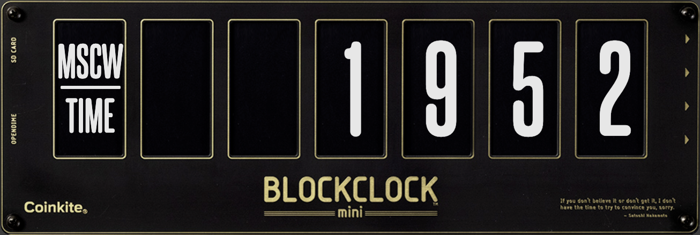

BLOCKCLOCK Moscow Time Widget
Add a BLOCKCLOCK widget to your website. You can choose between two versions:
-
Full BLOCKCLOCK including the transparent frame. Suitable for white / light background colors (works well with hex code
#FCFBF7).
- BLOCKCLOCK without the transparent frame. Pick this if your background color doesn't blend well with the frame. 
Instructions
-
Just before your closing
</head>of your HTML, insert a<script>tag to import the required JavaScript and CSS to run the widget.<head> <!-- Insert ONE of the below <script> tags before your closing </head> tag. --> <!-- NOTE: BLOCKCLOCK is a registered trademark of Coinkite Inc. --> <script src="https://moscowtime.xyz/widget-with-frame.js"></script> <script src="https://moscowtime.xyz/widget-no-frame.js"></script> </head>
-
Add a
<div>with anidofblockclock-containeranywhere in your document flow where you would like insert the widget. -
Use the appropriate
classvalues to determine which views should be shown and how often they should be cycled. The supported values for different views are:-
blockheight -
usdprice -
satsperdollar -
moscowtime
-
-
Specify the cycle interval using
interval-nclass, wherenis the number of milliseconds to wait between view changes (defaults to 3000). - Control the width of the widget by applying direct styles or targeting it from your exising CSS.
The following example will render a BLOCKCLOCK that cycles between moscowtime, usdprice and blockheight every 3 seconds and will not span wider than 700px.
<div id="blockclock-container" class="moscowtime usdprice blockheight interval-3000" style="max-width: 700px" ></div>
Enjoy keepig an eye on Moscow Time!